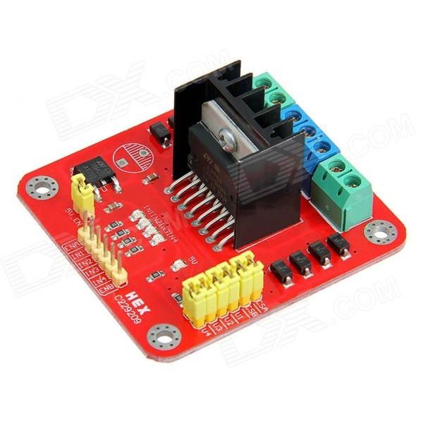
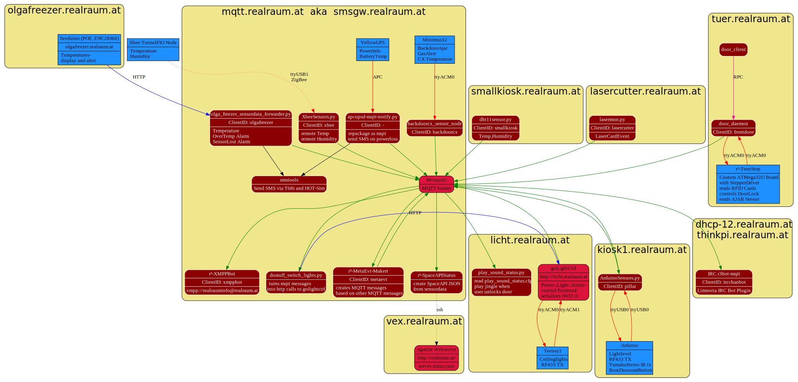
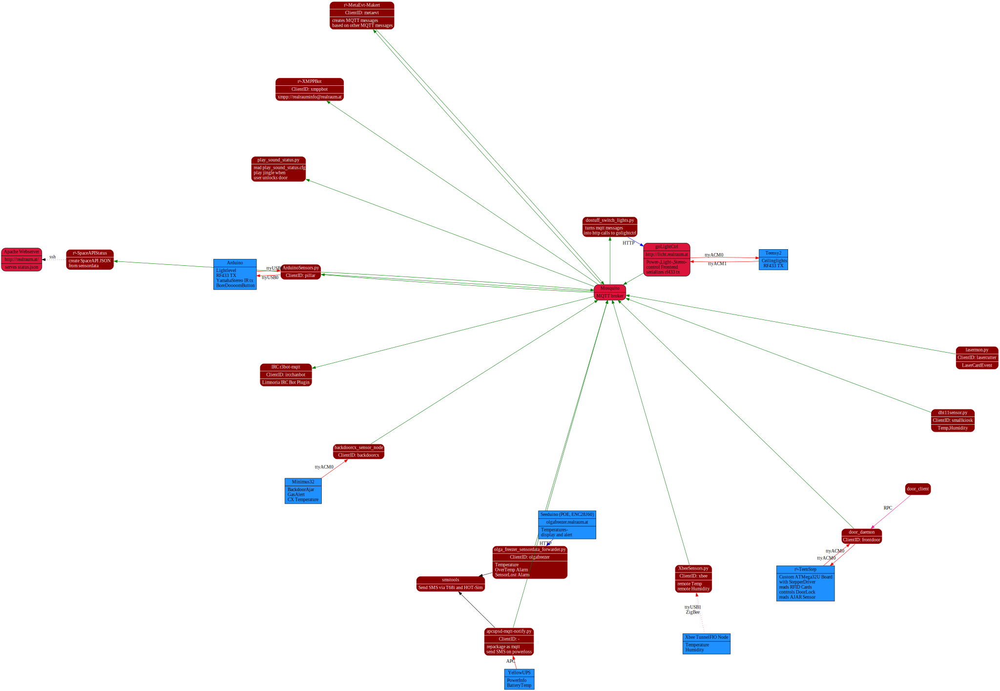

class: center, middle background-image: url(photos/2874-light-power.jpg) # Sensors, Lights and Power # # ## © xro, 2016-02-25 <a rel="license" href="http://creativecommons.org/licenses/by-sa/4.0/"><img class="ccimg" alt="Creative Commons Lizenzvertrag" style="border-width:0" src="https://i.creativecommons.org/l/by-sa/4.0/88x31.png" /></a> --- # Exploring the Use-Cases 1. Switching ceiling lights with a Teensy and RaspberryPi 1. Switching RF433 power outlets with Arduino and a cheap remote 1. From Sensordata to the homepage via MQTT and SpaceAPI 1. Interlude: Yamaha Stereo and RF433 again 1. How the button makes terrible noise 1. Unlocking the door and all it's consequences 1. How events and simple scripts govern light --- # Switching ceiling lights with a Teensy and RaspberryPi .left-column[ ] .right-column[ [golightctrl](https://github.com/realraum/deckenlichtschalter/tree/master/linux/golightctrl) - toggles 230V Relay via GPIOs ([go-bbhw](https://github.com/btittelbach/go-bbhw/tree/master)) - Buttonpress-Updates from Teensy2 - Webserver [http://licht.realraum.at](http://licht.realraum.at) ] --- # Switching ceiling lights with a Teensy and RaspberryPi .bigfont.center[[licht.realraum.at](http://licht.realraum.at)] <br/><br/><br/> ```bash curl 'http://licht.realraum.at/cgi-bin/mswitch.cgi?ceiling1=1&ceiling2=1' sleep 2 curl 'http://licht.realraum.at/cgi-bin/mswitch.cgi?ceiling1=0&ceiling2=0' ``` --- # Switching RF433 power with µC & cheap remote .bigfont.center[[licht.realraum.at/switch.html](http://licht.realraum.at/switch.html)] <br/><br/><br/> ```bash curl 'http://licht.realraum.at/cgi-bin/mswitch.cgi?ceiling1=1&ceiling2=1' sleep 2 curl 'http://licht.realraum.at/cgi-bin/mswitch.cgi?ceiling1=0&ceiling2=0' ``` --- # Switching RF433 power with µC & cheap remote .right-column[Teensy2 <img src="photos/teensy2pinout2a.png" style="width:60%;"> - forwards button-presses to RaspberryPi (ttyACM0) - [sends RF433 Signals (ttyACM1)](https://github.com/realraum/deckenlichtschalter/blob/master/teensy2/lightctrl/rf433.c) - could switch relays by itself - second ButtonBox could be located anywhere and http-control GoLightCtrl ] .left-column[ <a href="http://www.pollin.de/shop/dt/MzMzOTQ0OTk-/Haustechnik/Funkschaltsysteme/Funksteckdosen_Set_mit_3_Steckdosen.html">Pollin Funksteckdosen-Set<br/></a> <a href="http://www.pollin.de/shop/dt/NDgxODcyOTk-/Computer_und_Zubehoer/Hardware/Maeuse_Unterlagen_Joystick/PC_Funkfernbedienung_X10.html"/>Pollin X10 Fernbedienung<br/></a> [Datasheet HS1527](http://sc-tech.cn/en/hs1527.pdf) (example) ] --- # Now for something completely different -- ### Sensors in r³ - Temperature: CX, LoTHR, Outside, YellowUPS, OLGA, OLGAFreezer - Humidty: LoTHR, Outside - Illumination - Movement - Door Ajar (frontdoor, backdoor) - Door Lock (frontdoor) - Lasercutter in-use - GasLeak - Dust (planned) - Co2 (planned) -- formerly connected via [ØMQ](http://zeromq.org/) and [self-written message broker](https://github.com/realraum/door_and_sensors/blob/c56e1a3edc169849c4294c1b88e92510c79c11e3/r3-eventbroker_zmq/main.go) -- Upgrade and version problems --> better solution needed Enter MQTT --- # MQTT is a lightweight Machine-2-Machine Client Server publish/subscribe messaging transport protocol. .left-column[ Each Message consist of - a Topic ("string/string/string") - a Payload - can be empty - can be a string or bunch of bytes - JSON is popular - or something else whatever - some flags - QOS - Retransmission - Persist ] .right-column[ <img src="graphs/pub-sub-mqtt-1024x588.png" alt="MQTT Publish Subscribe (c)HiveMQ" width="100%"> .smallfont[[image (c) and more](http://www.hivemq.com/blog/mqtt-essentials-part2-publish-subscribe)] ] [mqttspecs]: http://docs.oasis-open.org/mqtt/mqtt/v3.1.1/mqtt-v3.1.1.html --- background-image: url(graphs/doorsensors_nodes_circo.svg) --- # MQTT Topics .monospace[.green[level1].red[/].green[level2].red[/].green[level3].red[/].green[level4]] .floatright[read [more](http://www.hivemq.com/blog/mqtt-essentials-part-5-mqtt-topics-best-practices) ] ### Authentication possible to require authentication. Make sure only certain clientids can publish to certain topics. .left-column[ ### Subscribing with Wildcards single-level wildcard .monospace[.green[level1].red[/]+.red[/].green[level3].red[/].green[level4]] multi-level wildcard .monospace[.green[level1].red[/]#.red[/].green[level4]] ] .right-column[ ### Special Topics .monospace[ $SYS.red[/].green[broker].red[/].green[clients].red[/].green[connected] $SYS.red[/].green[broker].red[/].green[clients].red[/].green[disconnected] $SYS.red[/].green[broker].red[/].green[clients].red[/].green[total] $SYS.red[/].green[broker].red[/].green[messages].red[/].green[sent] $SYS.red[/].green[broker].red[/].green[uptime] ]] --- # MQTT Topics in r3 ### Sensors .monospace[.green[realraum].red[/].green[src-clientid].red[/].green[messagetype]] ### Actions .monospace[.green[action].red[/].green[dst].red[/].green[messagetype]] <br/> <br/> ```bash ./scripts/listen_to_events.py ``` All [r3-MQTT Topics](https://realraum.at/wiki/doku.php?id=roomauto:mqtt_topics) --- # Sensordata to SpaceAPI via MQTT [r3-spaceapistatus](https://github.com/realraum/door_and_sensors/tree/master/r3-spaceapistatus) 1. Subscribes to Sensordata 2. Creates [SpaceAPI](http://spaceapi.net/) conform [status.json](https://realraum.at/status.jon) 3. Publishes to the Web by uploading via SSH to .monospace[vex.realraum.at] [kiosk.js](http://realraum.at/kiosk.js) * displays it in a nice way on [wiki.realraum.at](http://wiki.realraum.at) [r3pi-temperature](https://github.com/realraum/r3pi-temperature) by Verr * [graphs](http://realraum.github.io/r3pi-temperature/) the values --- # Yamaha Stereo and some MQTT .green[action].red[/] ### goLightCtrl .smallfont[[licht.realraum.at/ymhremote.html](http://licht.realraum.at/ymhremote.htmll)] ```bash curl 'http://licht.realraum.at/cgi-bin/mswitch.cgi?ymhpower=1' sleep 2 curl 'http://licht.realraum.at/cgi-bin/mswitch.cgi?ymhvoldown=1&ymhvoldown=1' sleep 2 curl 'http://licht.realraum.at/cgi-bin/mswitch.cgi?ymhvolup=1' sleep 2 curl 'http://licht.realraum.at/cgi-bin/mswitch.cgi?ymhpower=0' ``` publishes .monospace[.green[action].red[/].green[yamahastereo].red[/].green[ircmd]] -- ### received by [arduinosensors.py](https://github.com/realraum/door_and_sensors/blob/master/scripts/arduinosensors.py) sends 1byte cmd to [Old Old Arduino](https://github.com/realraum/jk16legacy/blob/master/rf433ctl/rf433ctl.pde) which uses Arduino IRRemote Library to send RC5 encoded Infrared Signal -- .bold[Took a bit to brute force all 256 possible Yamaha IRcmds] --- # Also used for RF433 * second RF Transmitter on Old Old Arduino * [arduinosensors.py](https://github.com/realraum/door_and_sensors/blob/master/scripts/arduinosensors.py) handles this as well * goLightCtrl ensures two transmitters don't transmitt simultaniously -- ### Future Project make µC or RaspberryPI listen for RF433 signal and send when "air is clear" --- # How the button makes terrible noise ### [arduinosensors.py](https://github.com/realraum/door_and_sensors/blob/master/scripts/arduinosensors.py) again because that's where the BoreDoomButton is connected 1. receives .monospace[ButtonPressed] via .monospace[ttyUSB0] from OldOldArduino 2. publishes .monospace[.green[realraum].red[/].green[pillar].red[/].green[boredoombuttonpressed]] -- ### [play-sound-status.py](https://github.com/realraum/door_and_sensors/blob/master/scripts/play-sound-status.py) 1. receives .monospace[.green[realraum].red[/].green[pillar].red[/].green[boredoombuttonpressed]] 2. reads [play-sound-status.cfg](https://github.com/realraum/door_and_sensors/blob/master/scripts/play-sound-status.cfg) 3. runs command aka plays Sound-File --- .center[# Unlocking the door and all the consequences ### Putting it all together ] --- # Unlocking the door .left-column[ <br/>  ] ### TeenStep PCB * [custom made](https://github.com/realraum/teenstep) by Equinox * uses [DXStepperMotorDriver](http://www.dx.com/p/geeetech-l298n-stepper-motor-driver-board-for-arduino-red-379844#). * controls Stepper connected to bike chain connected to cog welded to lock (sponsored by FloWolf) * measures angle using linear potentiometer * blinks light * read RFID Cards via I²C RFID Reader * talks via LUFA USB-ttyACM0 * [Firmware](https://github.com/realraum/tuer-rfid) remembers RFID keys in EEPROM and opens/closes door on its own * powered via USB by Alix Board --- background-image:url(photos/whiteboard_tuer_steuerung_v2.jpg) --- # Unlocking the door, one step further ### Alix Board (i386 PC on Door) * recieves State from Firmware via ttyACM0 * open, opening, closed, closing, ajar, shut, error, Card, ... * POE powered (Future: with it's own UPS) * can flash keys onto TeenStep * can .monospace[open]/.monospace[close]/.monospace[toggle] lock via ttyACM0 -- .floatleft[ ### Door-Daemon * connected to TeenStep * publish events to MQTT * DoorCmd (Who and How) * DoorAjar (true/false) * DoorLock (true/false) * talk with Door-Client via goRPC ] -- .floatright[ ### Door-Client * called via Shell * called via SSH (e.g. via authorized_hosts) * formerly called on phonecall (Asterix) ] --- # MQTT Door Messages .floatright[ ```go // realraum/frontdoor/cmdevt type DoorCommandEvent struct { Command string Using string Who string Ts int64 } // realraum/frontdoor/manuallockmovement type DoorManualMovementEvent struct { Ts int64 } // realraum/frontdoor/problemevt type DoorProblemEvent struct { Severity int Problem string Ts int64 } ``` ] .floatleft[ ```go // realraum/frontdoor/lock type DoorLockUpdate struct { Locked bool Ts int64 } // realraum/frontdoor/ajar type DoorAjarUpdate struct { Shut bool Ts int64 } // realraum/backdoorcx/ajar type BackdoorAjarUpdate struct { Shut bool Ts int64 } ``` as defined in go package [r3events](https://github.com/realraum/door_and_sensors/tree/master/r3events) ] --- ## Unlocking the door ... makes you Present #### r³-metaevt-maker 1. subscribes to: - Movement - DoorAjar - DoorLock 2. tries to guess if someone is here. ([Presence-Module](https://github.com/realraum/door_and_sensors/blob/master/r3-metaevt-maker/presence.go)) 3. publishes .monospace[realraum/metaevt/presence] -- ## ... Presence has Consequences * [dostuff_switch_lights.py](https://github.com/realraum/door_and_sensors/blob/master/scripts/dostuff_switch_lights.py) .smallfont[...calls goLightCtrl via http] * play-sound-status.py reads [play-sound-status.cfg](https://github.com/realraum/door_and_sensors/blob/master/scripts/play-sound-status.cfg) * r³-xmppbot * r³-spaceapistatus subscribe to .monospace[realraum/metaevt/presence]. Guess what they do :-) --- background-image: url(graphs/presence_detection_algorithm.svg) --- # How events and simple scripts govern light ### All Meta-Events * [DuskOrDawn](https://github.com/realraum/door_and_sensors/blob/master/r3-metaevt-maker/duskordawn.go) * [RealMovement](https://github.com/realraum/door_and_sensors/blob/master/r3-metaevt-maker/metamovement.go) * [SensorLost](https://github.com/realraum/door_and_sensors/blob/master/r3-metaevt-maker/sensorlost.go) * [Presence](https://github.com/realraum/door_and_sensors/blob/master/r3-metaevt-maker/presence.go) ### [dostuff_switch_lights.py](https://github.com/realraum/door_and_sensors/blob/master/scripts/dostuff_switch_lights.py) and [play-sound-status.py](https://github.com/realraum/door_and_sensors/blob/master/scripts/play-sound-status.py) .smallfont.graybox[ | **Cause** | **Effect** | |----------:|:-----------| | Niemand Anwesend | All OFF | | Anwesenheit erkannt vor Sonnenuntergang | Tesla, Boiler, CX-GangLEDs, BlueLEDs ON | | Anwesenheit erkannt nach Sonnenuntergang | 50% Ceilinglights, Tesla, Boiler, CX-GangLEDs, Abwaschlicht, LEDs at Couch, BlueLEDs ON | | Sonnenuntergang | CX-GangLEDs on | | Sonnenaufgang | CX-GangLEDs off | | Panic Button drücken| play sound file| ] .smallfont[[see wiki](https://realraum.at/wiki/doku.php?id=roomauto:roomauto#automatiken)] --- background-image: url(graphs/doorsensors_nodes.svg) --- .left-column[ #[All the Nodes](https://realraum.at/wiki/doku.php?id=roomauto:mqtt_topics#clients_aka_1st_level_topics) ####Legend Nodes <br/> ####Legend Edges <img src="graphs/doorsensors_nodes_legend.svg" width="100%"><br/> ] .right-column[ <a href="graphs/doorsensors_nodes.svg" target="_new"></a><br/> <a href="graphs/doorsensors_nodes_circo.svg" target="_new"></a><br/> ]